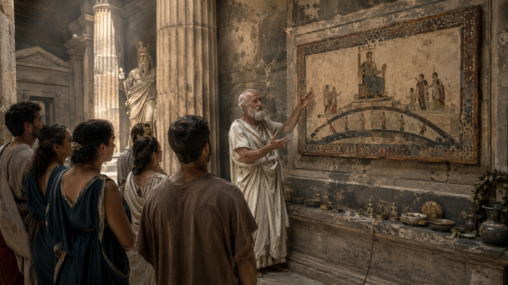
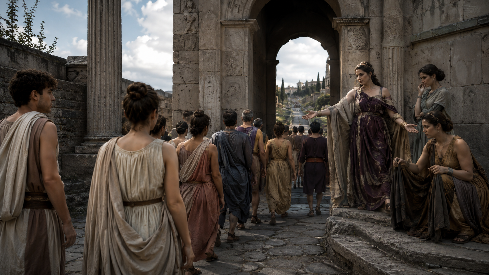
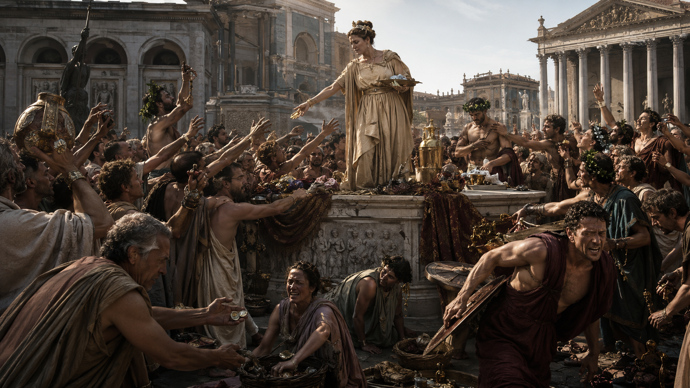
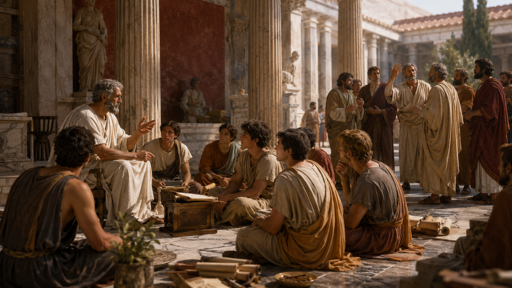
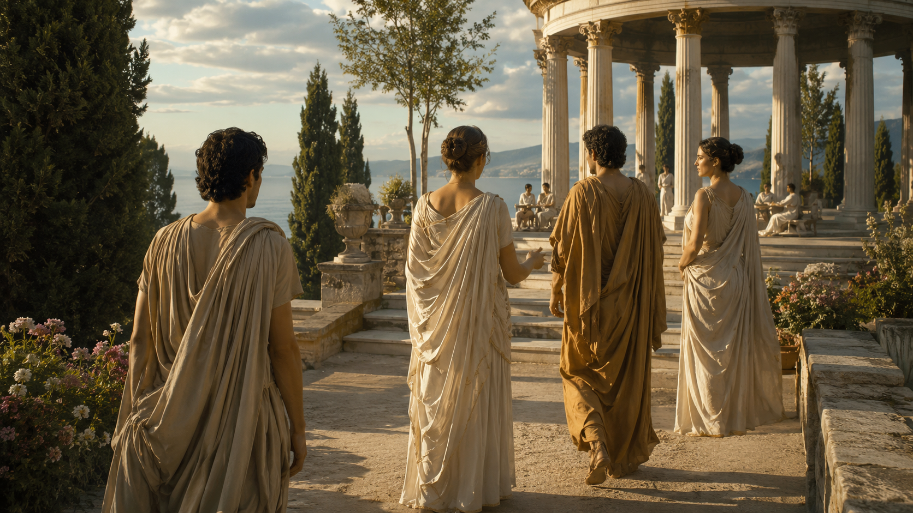

Introduction
Among the surviving treasures of antiquity, few works combine philosophical instruction, symbolic imagery, ethical reflection, and allegorical storytelling as elegantly as the Tabula Cebetis, or The Tablet of Cebes. Though often overshadowed by the dialogues of Plato or the meditations of Marcus Aurelius, this remarkable text stands as one of the most fascinating examples of ancient philosophical allegory.
It presents a symbolic map of human existence, depicting the soul's journey through life, temptation, ignorance, education, virtue, and ultimately wisdom. At once a moral guide, philosophical puzzle, and spiritual diagram, the Tabula Cebetis has captivated readers for nearly two thousand years.
During the Renaissance it became one of the most widely printed classical texts, influencing educators, philosophers, artists, and esoteric thinkers alike. The work serves as a bridge between Greek philosophy, ethical instruction, and the universal human search for meaning.
Far more than a literary curiosity, the Tabula Cebetis offers a profound meditation on the conditions of human existence. It asks why people pursue false goods, what true happiness is, how one distinguishes wisdom from illusion, and what obstacles stand between humanity and genuine fulfillment.
The answers unfold through a symbolic image: a mysterious tablet displayed in a temple, revealing the hidden architecture of human life.

The Mystery of the Tabula Cebetis
The Tabula Cebetis survives as a short Greek dialogue dating from approximately the first or second century CE. Although traditionally attributed to Cebes of Thebes, a disciple of Socrates who appears in Plato's Phaedo, modern scholars generally agree that the work was composed centuries after the historical Cebes lived.
The author remains unknown. Yet anonymity has done little to diminish the text's influence. In many ways, its mysterious origins have only enhanced its allure.
The narrative begins when a group of visitors enters a temple dedicated to Cronos. Hanging within the sanctuary is an enigmatic painting or tablet. The image appears highly complex, filled with concentric enclosures, symbolic figures, pathways, gates, and human beings engaged in various activities.
Perplexed by the image, the visitors ask an elderly interpreter to explain its meaning. What follows is one of the most sophisticated allegorical explanations in ancient literature. The old man reveals that the image depicts nothing less than the entire journey of human life.

The Tablet as a Symbolic Map of Existence
The central metaphor of the Tabula Cebetis is the image itself. The tablet functions as a philosophical mandala: a visual representation of reality arranged according to moral and spiritual principles.
The image contains three concentric enclosures surrounded by walls and gates. Human beings enter the first enclosure at birth and proceed through various stages of existence. Along the way they encounter misleading guides, seductive temptations, false teachings, and deceptive rewards.
Only a small number ultimately arrive at true wisdom. The image can be understood as a symbolic geography of the soul. Just as ancient navigators used maps to traverse unknown seas, the Tabula offers a chart by which individuals may navigate the hazards of existence.
Its purpose is not merely descriptive but transformative. It seeks to awaken the reader to the hidden structure underlying ordinary life.

The Entrance into Life
At the beginning of the allegory stands a striking figure known as Deceit. Every human being entering life must first encounter her. Nearby stands Error, along with a host of misleading influences who persuade individuals to adopt false beliefs about happiness and success.
This opening scene establishes one of the central philosophical themes of the work: human beings do not begin life in possession of truth. Instead, they inherit assumptions, prejudices, desires, and illusions.
The soul enters a world already filled with confusion. This insight echoes the teachings of Socrates, who famously claimed that wisdom begins with recognizing one's ignorance.
The Tabula portrays humanity as wandering through a landscape shaped by mistaken judgments. People pursue wealth believing it brings fulfillment. They seek power believing it grants security. They chase pleasure believing it provides happiness. Yet all these pursuits ultimately prove unstable.

The Realm of False Goods
One of the most memorable features of the Tabula is its critique of what it calls false goods. Throughout the first enclosure stand figures representing wealth, fame, honor, physical beauty, pleasure, status, power, and luxury.
Crowds gather around these figures. They struggle, compete, and sacrifice themselves in pursuit of these rewards. Yet the allegory insists that these things possess no inherent power to produce happiness.
This argument reflects a central conviction of many Hellenistic philosophical schools, particularly Stoicism. External circumstances may be desirable, but they cannot guarantee inner fulfillment.
A wealthy fool remains miserable. A powerful tyrant remains enslaved by fear. A celebrated individual remains vulnerable to fortune. The Tabula therefore challenges the reader to distinguish between apparent goods and genuine goods. This distinction forms the foundation of philosophical life.
Fortune and the Wheel of Instability
Among the figures encountered within the tablet, Fortune occupies a prominent position. She distributes gifts indiscriminately. One person receives wealth. Another receives health. Another receives influence. Yet Fortune is unstable. What she grants she may also take away.
The symbolism anticipates later medieval representations of the Wheel of Fortune. The lesson is clear: anything dependent upon external conditions remains vulnerable. Human beings who anchor their happiness in transient possessions become prisoners of uncertainty.
The wise person seeks something more enduring. This pursuit leads beyond the first enclosure and toward a deeper understanding of reality.
The Path of Education
Not all individuals remain trapped within illusion. Some recognize the emptiness of false pursuits and begin searching for truth. These seekers encounter Paideia, or Education.
In Greek culture, paideia signified far more than formal schooling. It referred to the cultivation of the entire human being. Education shapes intellect, character, judgment, and virtue.
The Tabula presents education as a necessary stage of liberation. Without discipline and self-examination, the individual remains captive to appearances. Yet education itself is not the final goal.
Many acquire knowledge without acquiring wisdom. Many become skilled without becoming virtuous. Thus even intellectual achievement can become another form of illusion. The journey must continue.
The False Philosophers
One of the most fascinating dimensions of the Tabula Cebetis is its criticism of pseudo-philosophy. Within the second enclosure stand various teachers who claim to possess truth. They attract followers and offer competing doctrines. Yet many of them merely substitute one form of ignorance for another.
The allegory warns against confusing rhetoric with wisdom. Knowledge can become vanity. Learning can become performance. Philosophy can become an identity rather than a genuine transformation of the soul.
This warning remains remarkably relevant today. The accumulation of information does not automatically produce understanding. The possession of opinions does not guarantee insight. True philosophy requires inner change.

The Ascent Toward Virtue
Those who persevere eventually encounter the Virtues. Unlike wealth, pleasure, or fame, the virtues cannot be stolen by fortune. They belong to the soul itself.
Among them are courage, self-control, justice, wisdom, and perseverance. The virtues serve as guides leading the seeker toward genuine freedom.
The Tabula presents virtue not as obedience to external rules but as the restoration of the soul's proper order. To become virtuous is to align oneself with reality. The individual ceases to be ruled by appetite, fear, vanity, or illusion. Instead, one develops clarity and stability.
This transformation marks the beginning of authentic happiness.
True Happiness and the Goal of Life
The highest destination depicted in the tablet is True Education and Genuine Happiness. This state differs fundamentally from pleasure or success. It is an inner condition rooted in wisdom.
The person who reaches this stage understands the nature of reality, the limitations of fortune, the difference between appearance and truth, the value of virtue, and the proper ordering of desires.
Such a person becomes free. Not free from circumstance, but free from dependence upon circumstance. This ideal closely parallels the Stoic concept of the sage and the Platonic vision of the philosopher who has turned toward the light of truth.
The goal is not escape from life but mastery within life.
Platonic Influences
The Tabula Cebetis bears unmistakable traces of Platonic thought. Like Plato's Allegory of the Cave, it depicts humanity as trapped within illusion. Like the Republic, it emphasizes education as the path from ignorance to wisdom. Like the Phaedo, it portrays philosophy as a preparation for a higher mode of existence.
The concentric structure of the tablet resembles a graded ascent through levels of understanding. Each enclosure represents a different condition of consciousness. The soul must gradually transcend lower perspectives to achieve genuine insight.
In this sense, the Tabula functions as a visual counterpart to Plato's philosophical psychology.
Stoic Resonances
Although Platonic influences are evident, Stoic themes also permeate the work. The emphasis on virtue as the highest good, indifference toward external fortune, self-mastery, rational judgment, and freedom from illusion all reflect Stoic ethical principles.
The text repeatedly teaches that happiness depends upon character rather than circumstance. This idea became one of the defining doctrines of ancient philosophy.
Indeed, much of the enduring power of the Tabula derives from its synthesis of Platonic and Stoic insights into a single symbolic narrative.
A Precursor to Later Spiritual Maps
The influence of the Tabula Cebetis extends far beyond classical antiquity. Its symbolic structure anticipates many later spiritual and esoteric diagrams.
Parallels may be found in the ascent of the soul through Neoplatonic cosmology, Christian pilgrimage literature, medieval moral allegories, Renaissance emblem books, Hermetic spiritual diagrams, Rosicrucian symbolic maps, the Kabbalistic Tree of Life, and Bunyan's Pilgrim's Progress.
Each depicts human existence as a journey through stages of awakening. Each emphasizes the distinction between illusion and truth. Each presents spiritual growth as a process of inner transformation.
The Tabula stands among the earliest and most elegant examples of this enduring archetype.
The Renaissance Revival
During the Renaissance, the Tabula Cebetis enjoyed extraordinary popularity. Humanist educators regarded it as an ideal introduction to moral philosophy. Its combination of narrative, symbolism, and ethical instruction made it particularly valuable for students.
Numerous illustrated editions appeared throughout Europe. Artists transformed its symbolic imagery into elaborate engravings. Scholars translated and commented upon the work. For centuries, it remained one of the most widely read texts of classical antiquity.
Its appeal lay in its accessibility. Complex philosophical ideas became visible through images. Abstract principles became living characters. The reader did not merely study philosophy; one entered a philosophical world.

The Universal Relevance of the Tabula
Perhaps the greatest achievement of the Tabula Cebetis is its enduring universality. The external forms of human life have changed dramatically since antiquity. Yet the essential challenges remain remarkably similar.
People still pursue status. People still confuse appearance with reality. People still seek happiness in unstable conditions. People still struggle to distinguish genuine wisdom from seductive falsehoods.
The allegory therefore remains strikingly contemporary. Its symbolic figures continue to populate modern society under new names. The pursuit of wealth, recognition, pleasure, and influence remains as powerful as ever. The need for discernment remains equally urgent.
Conclusion: A Timeless Diagram of the Human Condition
The Tabula Cebetis endures because it speaks to a permanent feature of human existence: the search for meaning amid confusion.
Through the image of a mysterious tablet hanging within a sacred temple, the anonymous author created one of the most compelling philosophical allegories of the ancient world. The work presents life as a journey through illusion toward understanding, through temptation toward virtue, and through ignorance toward wisdom.
Its enduring lesson is both simple and profound: human beings often seek happiness in the wrong places. The treasures most fiercely pursued are frequently the least capable of satisfying the soul.
True fulfillment emerges not from fortune, wealth, power, or reputation, but from wisdom, virtue, and the disciplined cultivation of the self.
In this respect, the Tabula Cebetis remains far more than an artifact of antiquity. It is a philosophical mirror held before every generation, inviting each reader to ask where they are upon the journey, which guides they are following, and what, in truth, they are seeking.
The answers, as the ancient tablet suggests, determine the entire course of human life.